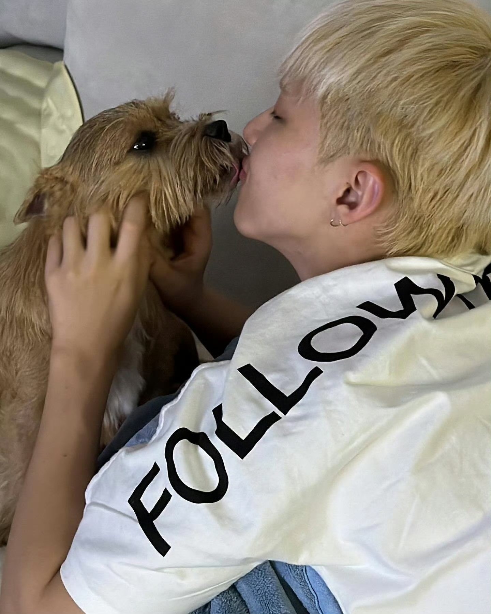
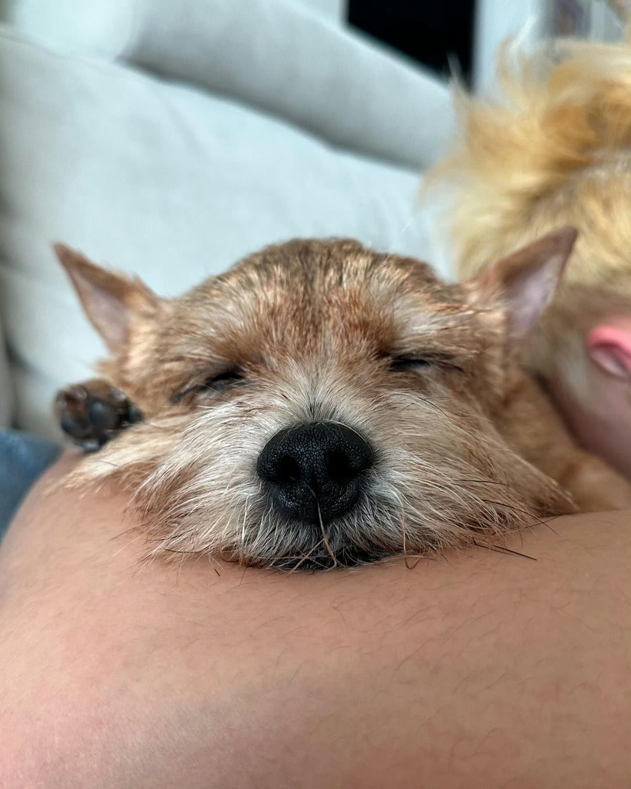

Seventeen 权顺荣
为Seventeen带来舞蹈魅力的男孩，闪亮的舞台王者。

为Seventeen带来舞蹈魅力的男孩，闪亮的舞台王者。
权顺荣（Hoshi），出生于1996年6月15日，来自韩国南扬州，是家里的小儿子，拥有一个姐姐。权顺荣非常爱自己的家乡，时常在公开场合表达对家乡的热爱。作为Seventeen的第一个出道成员，他是唯一的主舞，并且凭借无与伦比的舞蹈才华，在Kpop圈内迅速崭露头角。
Hoshi不仅是Seventeen的核心成员之一，还被称为“南韩十大ACE”的第三位。作为舞蹈队长，他的领导力与才华不容小觑。他带领Seventeen以无可匹敌的“刀群舞”名声大噪，成为Kpop舞蹈领域的一代传奇。
作为Seventeen的主舞，Hoshi不仅仅是一个舞蹈家，更是团队的灵魂人物之一。从练习生时期，他就开始负责带领成员们练习基本功，为团队的舞蹈奠定了坚实的基础。
Hoshi还负责了Seventeen早期歌曲的编舞工作，并帮助团队不断突破极限。在他的带领下，Seventeen的舞蹈风格逐渐形成，并且凭借精准的舞蹈动作和创意十足的舞台表现，团队连续数年荣获“最佳表演男团”奖项。
SVT 11th Mini Album God of Music
SVT 12th Mini Album Love, Money, Fame
BSS 1st Single Album Fighting
Hoshi除了在舞台上闪亮登场外，私下也是一个充满爱心的宠物主人。他与他的小狗“拿铁”有着深厚的感情。无论是平日里放松的时候，还是在忙碌的工作间隙，Hoshi总能分享一些与拿铁在一起的可爱时光。
权顺荣与宠物狗拿铁一起度过的温馨时光。
拿铁：Hoshi生活中的小伙伴